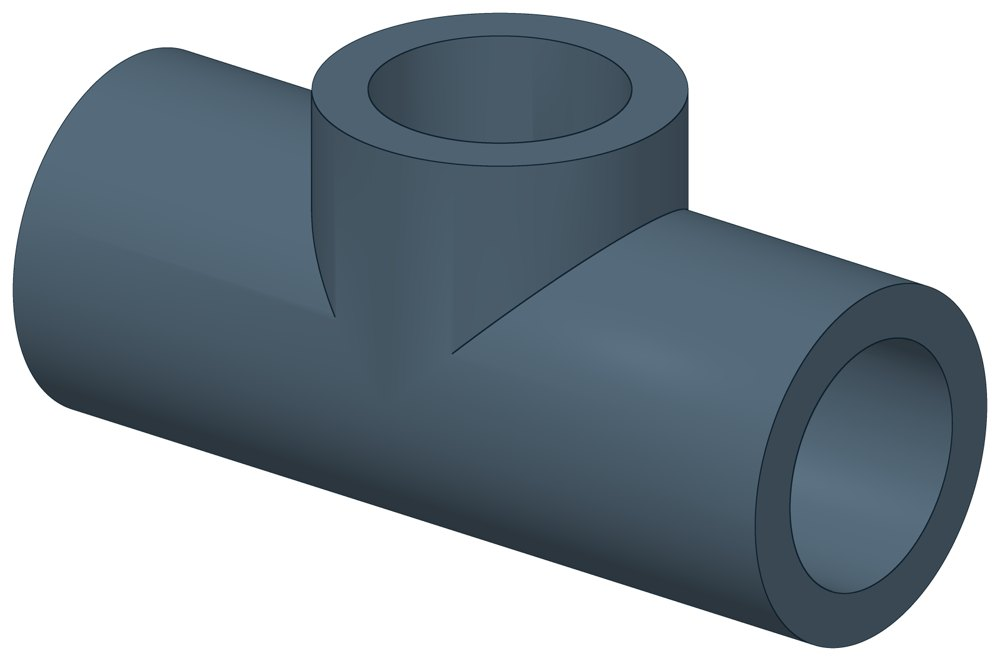

Тройник стальной равнопроходный
Равнопроходный тройник под приварку: ответвление того же диаметра, что и основная труба.

- Диаметр трубы Dн
- 20–21,3 мм
- Документ
- ГОСТ 17376-2001
- Исполнений
- 2
- Масса
- 0,06–0,068 кг
- Цена в магазине
- 38–188 ₽
- 3D-модели
- у всех исполнений
Применение и монтаж
Назначение: где применяется
Ответвление от трубопровода под прямым углом. Тройник подбирают по наружному диаметру и толщине стенки трубы.
D — наружный диаметр, T — толщина стенки, F — от оси ответвления до торца магистрали, H — от оси магистрали до торца ответвления. Масса мелких тройников — расчётная.
Таблица исполнений
| Обозначение | Код ПРОМБУРГ | Dмм | Tмм | Fмм | Hмм | Сталь | Цена₽ | Массакг | Артикул | Магазин | 3D |
|---|---|---|---|---|---|---|---|---|---|---|---|
| 20×3 | ПБ-ТР-0020-1 | 20 | 3 | 25 | 15 | 20 | 38 | 0,068 | TEN2074 | Купить | 3D |
| 21,3×2, 12Х18Н10Т* | ПБ-ТР-0021-1 | 21,3 | 2 | 25 | 25 | 12Х18Н10Т | 188 | 0,06 | TEN2108 | Купить | 3D |
* Примечания к исполнениям:
- 21,3×2, 12Х18Н10Т — Размеры как у тройника по ГОСТ 17376-2001; на нержавеющую сталь этот стандарт не распространяется
Цена — из магазина promburg.ru на дату редакции каталога 12.10.2026, ₽ за штуку; актуальную цену и наличие уточняйте при заказе.
Чтобы заказать, сообщите обозначение и код ПРОМБУРГ: +7 (499) 325-51-35, promburg@yandex.ru.
Нормативные документы
- ГОСТ 17376-2001 Детали трубопроводов бесшовные приварные из углеродистой и низколегированной стали. Тройники. Конструкция — документ, по которому изготавливается изделие
На трубу Dн 20–21,3 мм в каталоге
Позиции каталога с исполнениями на те же наружные диаметры трубы.
Компенсаторы
- Компенсатор сильфонный DEK общих Dн: 1
- Компенсатор сильфонный для систем отопления общих Dн: 1
- Компенсатор сильфонный для отопления с кожухом КОК общих Dн: 1
- Компенсатор сильфонный КС общих Dн: 1
- Компенсатор сильфонный КСО общих Dн: 1
- Компенсатор сильфонный КСО-Д КСОД общих Dн: 1
- Компенсатор сильфонный антивибрационный газовый КСУ-Г КСУГ общих Dн: 1
- Компенсатор сильфонный сейсмический общих Dн: 1
Другие детали
- Отвод нержавеющий 90° общих Dн: 1
- Отвод стальной крутоизогнутый 90° общих Dн: 1
Другие типы раздела
Детали трубопроводов (отводы, переходы, фланцы, заглушки, днища, тройники)
- Днище стальное эллиптическое
- Заглушка стальная эллиптическая
- Отвод стальной крутоизогнутый 90°, 09Г2С
- Отвод нержавеющий 90°
- Отвод стальной крутоизогнутый 90°
- Переход стальной концентрический
- Фланец стальной воротниковый
- Фланец стальной плоский приварной
- Фланцы прочие
Частые вопросы
Что указать в заявке, чтобы получить цену без уточнений?
Обозначение с номером исполнения или код ПБ, количество, Dн и стенку трубы, расчётную температуру наружного воздуха, покрытие, город доставки и желаемый срок. Кнопка «В заявку» в таблице собирает спецификацию, которую можно выгрузить в Excel или отправить письмом.
Масса в таблице — фактическая?
Нет, справочная: в стандартах масса рассчитана по номинальным размерам. У переходов в ГОСТ 17378-2001 это масса трубной заготовки — готовый переход легче.
По какому стандарту нержавеющие отводы и тройники?
Размеры в таблице даны как у деталей по ГОСТ 17375-2001 и ГОСТ 17376-2001. На нержавеющую сталь 12Х18Н10Т эти стандарты не распространяются: документ на изделие уточняйте при заказе.
Детали подбирают по Ду или по наружному диаметру?
Приварные детали — отводы, переходы, тройники, заглушки, днища — по наружному диаметру и толщине стенки трубы, запись вида 219×6. Фланцы — по условному проходу Ду и давлению Ру.
Как устроен код ПРОМБУРГ у деталей?
Код вида ПБ-ФП-0015-1: вид детали, наружный диаметр или Ду четырьмя цифрами, номер строки внутри этого вида и диаметра. ПБ-ФП-0015-1 — фланец плоский Ду 15, первая строка (Ру 10); ПБ-ОТВ-0021-1 — отвод 21,3×2.